Review Assets
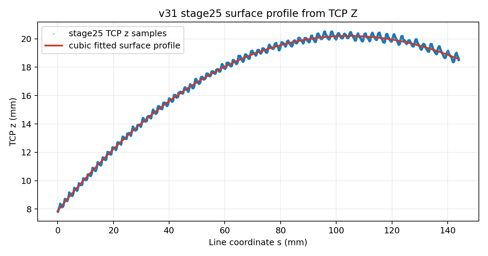
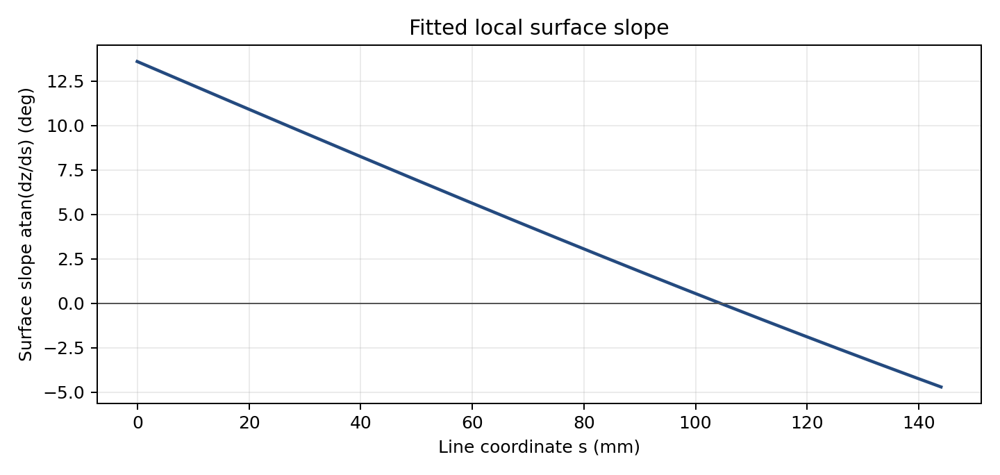
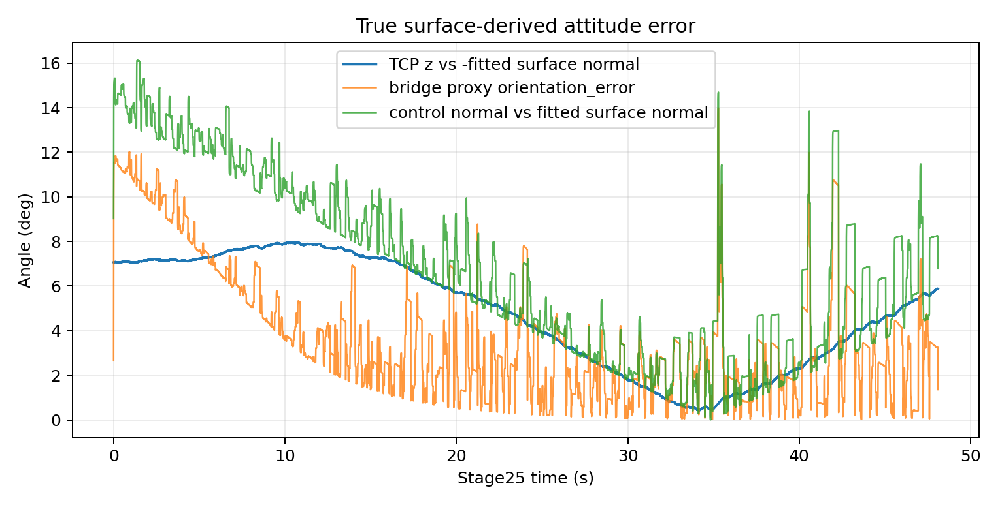
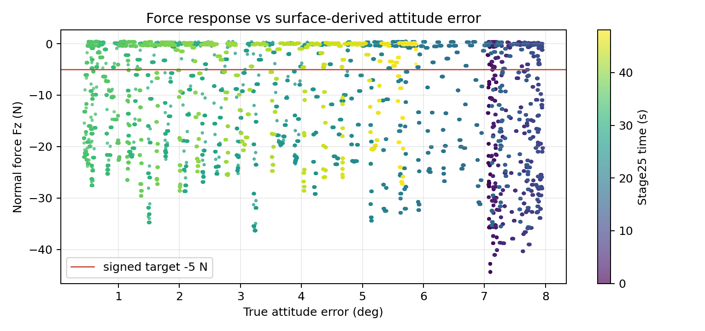
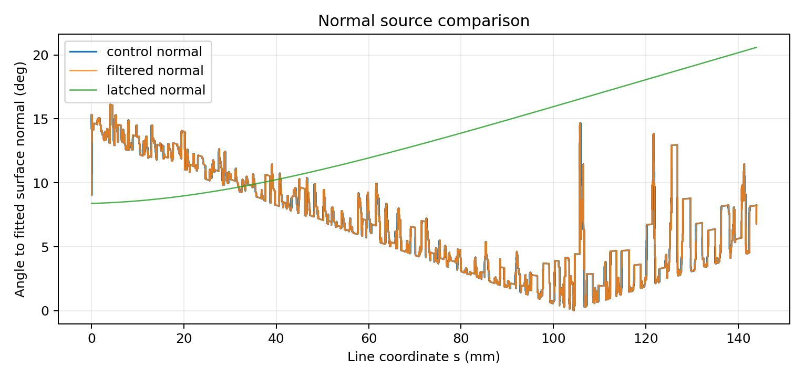
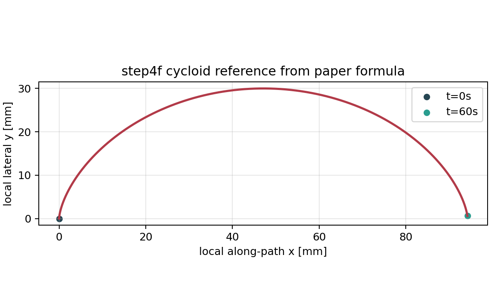
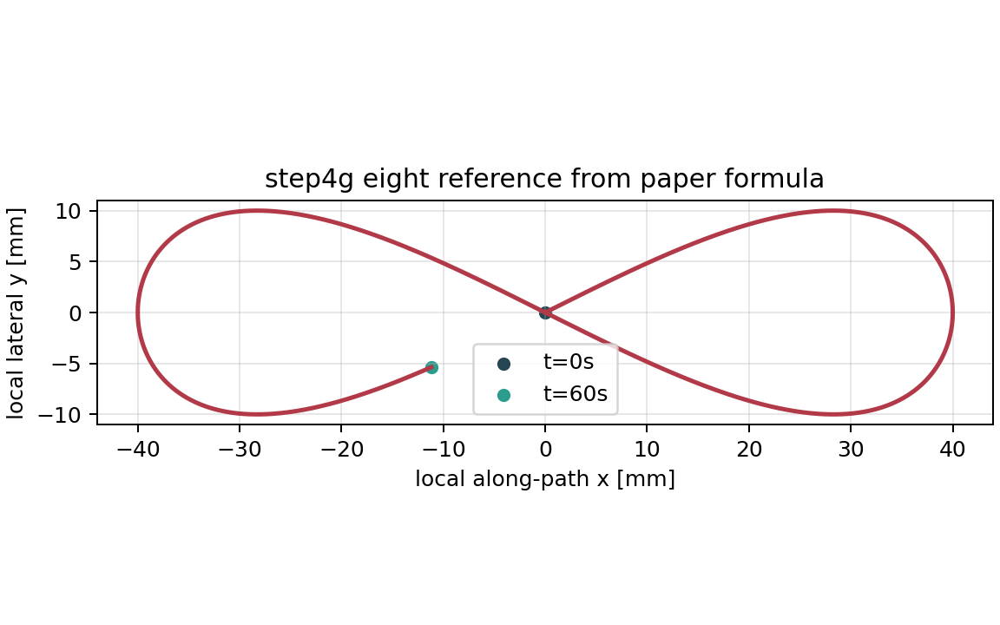
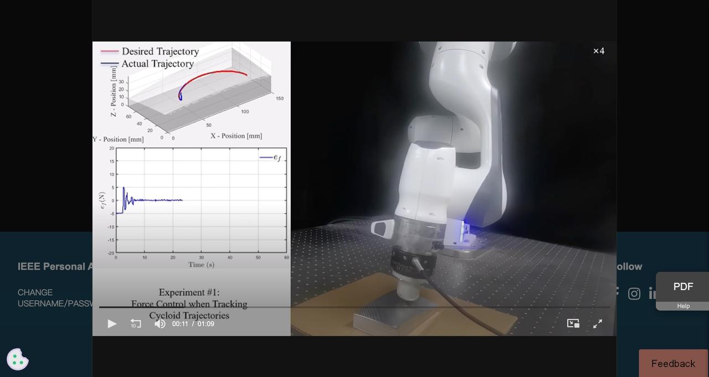
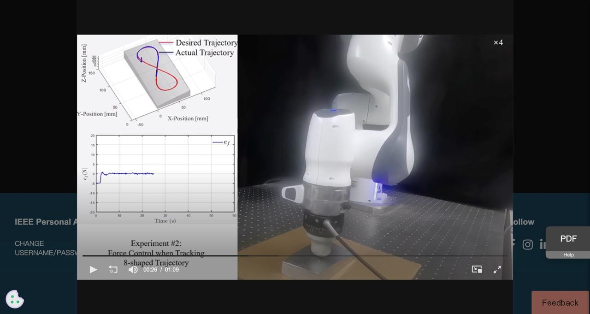
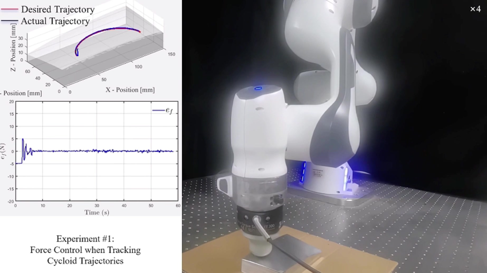
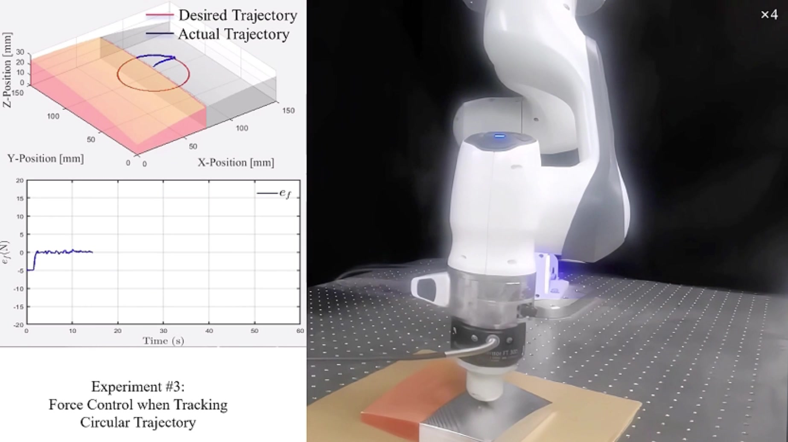
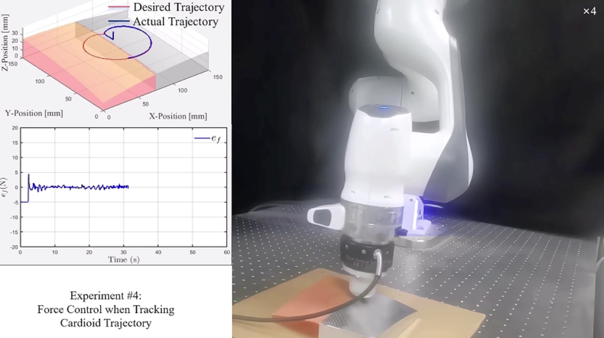
Metrics Snapshot
{
"run_id": "bridge_step4e_seed_normal_loop_v31_20260612_050155",
"analysis_window": {
"stage": 25.0,
"rows": 24046,
"duration_s": 48.08999927190598,
"s_min_mm": -0.046160518253438906,
"s_max_mm": 144.00074548640546,
"tcp_z_min_mm": 7.7965399513052,
"tcp_z_max_mm": 20.5449477876881,
"line_length_expected_mm": 143.7471231016468
},
"surface_fit": {
"model": "z = cubic(s), fitted in normalized s",
"degree": 3,
"residual_mm": {
"mean": -3.5725855905446025e-14,
"median": -0.015232161226653128,
"std": 0.1518431052352883,
"min": -0.3746086907432042,
"max": 0.4239450119035079,
"p95_abs": 0.2872908305777445,
"p99_abs": 0.3611114927851247
},
"slope_deg": {
"mean": 4.19646541788884,
"median": 4.0728160885744575,
"std": 5.311016643954774,
"min": -4.699125059182776,
"max": 13.597277507571714,
"p95_abs": 12.63321469267114,
"p99_abs": 13.408129284420966
},
"surface_normal_sign": "+z fitted normal; true attitude compares TCP z-axis to -surface_normal"
},
"attitude": {
"true_tcp_z_vs_negative_surface_normal_deg": {
"mean": 4.7968066819131066,
"median": 5.148302877347145,
"std": 2.466011059083788,
"min": 0.430806861281453,
"max": 7.9632925453957615,
"p95_abs": 7.870701414673111,
"p99_abs": 7.938987672645053
},
"bridge_proxy_orientation_error_deg": {
"mean": 3.76093965567377,
"median": 2.9728105250463406,
"std": 2.9027956410125815,
"min": 0.01446908064546783,
"max": 13.979398541633605,
"p95_abs": 10.509611283395596,
"p99_abs": 11.507171533423223
},
"control_normal_vs_surface_normal_deg": {
"mean": 6.861444121738478,
"median": 6.521660613759294,
"std": 3.940366941196392,
"min": 0.012587589882162674,
"max": 16.11904470839897,
"p95_abs": 13.717909966662624,
"p99_abs": 14.98137856045434
},
"filtered_normal_vs_surface_normal_deg": {
"mean": 6.861444121738478,
"median": 6.521660613759294,
"std": 3.940366941196392,
"min": 0.012587589882162674,
"max": 16.11904470839897,
"p95_abs": 13.717909966662624,
"p99_abs": 14.98137856045434
},
"latched_normal_vs_surface_normal_deg": {
"mean": 13.518658387745774,
"median": 13.09717880405529,
"std": 3.7838937839484155,
"min": 8.391429588295471,
"max": 20.591319153467946,
"p95_abs": 19.86115407793844,
"p99_abs": 20.435530725056335
}
},
"force": {
"normal_force_n": {
"mean": -12.788450499261135,
"median": -11.0633917,
"std": 11.597471020962764,
"min": -44.382845,
"max": 0.441194483,
"p95_abs": 32.6780771,
"p99_abs": 37.919742
},
"force_norm_n": {
"mean": 12.98705689770265,
"median": 11.1065967,
"std": 11.58741105103864,
"min": 0.108135694,
"max": 44.6703575,
"p95_abs": 32.9868535,
"p99_abs": 38.0903156
},
"target_signed_normal_force_n": -5.0
},
"sanity_checks": {
"line_length_143_747_mm_ok": true,
"tcp_z_range_matches_prior_report_ok": true,
"surface_fit_residual_p95_lt_0_5mm": true,
"surface_normal_sign_resolved_by_z_up_and_control_normal": true,
"synthetic_plane_fixture": {
"known_slope_dz_ds": 0.125,
"estimated_slope_mean": 0.12500000000000003,
"max_slope_abs_error": 5.551115123125783e-17,
"max_normal_angle_error_deg": 0.0,
"ok": true
}
},
"video_reference": {
"duration_s": 69.162,
"width": 1846,
"height": 1036,
"avg_frame_rate": "1363800/41497",
"size_bytes": 83957838,
"sha256": "4f2556e47aad9e83df041a09d8c2622682f33691827c48acc61c10d0b01fd32c",
"mac_source": "/Users/andyl/Documents/UR10e/archive/ur5e_legacy_20260518_223331/tase_reproduction_ur5e/TASE_Zhihao/reference_media/tase_supplementary_video_screenstudio_20260612.mp4",
"local_ignored_copy": "/home/andy/ur10e_ros2_ws/experiments/kunwei/closed-loop-straight-line/2026-06-04/runs/video_reference_tase_supplementary_20260612/tase_supplementary_video_screenstudio_20260612.mp4",
"frames": [
{
"time_s": 5.0,
"path": "assets/step4e-v31-surface-calibration/video-frames/tase-video-frame-01-005.0s.jpg"
},
{
"time_s": 20.0,
"path": "assets/step4e-v31-surface-calibration/video-frames/tase-video-frame-02-020.0s.jpg"
},
{
"time_s": 40.0,
"path": "assets/step4e-v31-surface-calibration/video-frames/tase-video-frame-03-040.0s.jpg"
},
{
"time_s": 60.0,
"path": "assets/step4e-v31-surface-calibration/video-frames/tase-video-frame-04-060.0s.jpg"
}
]
},
"controller_handoff": {
"step4f_cycloid_seed_normal_v1": {
"program": "step4f_cycloid_seed_normal_v1",
"controller_paths": {
".script": "root@192.168.1.18:/programs/andyl/kunwei/step4/step4f_cycloid_seed_normal_v1.script",
".txt": "root@192.168.1.18:/programs/andyl/kunwei/step4/step4f_cycloid_seed_normal_v1.txt",
".urp": "root@192.168.1.18:/programs/andyl/kunwei/step4/step4f_cycloid_seed_normal_v1.urp"
},
"readback_dir": "/home/andy/ur10e_ros2_ws/experiments/kunwei/closed-loop-straight-line/2026-06-04/runs/controller_readback_step4f_cycloid_seed_normal_v1_20260612_055814",
"stamp": "2026-06-12T0536HKT_STEP4F_CYCLOID_SEED_NORMAL_V1",
"checks": {
"status": true,
"local_controller_readback_sha_match": true,
"urp_name": true,
"urp_directory": true,
"script_node_path": true,
"cached_script_exact": true,
"stamp_in_script_txt_cache": true,
"path_shape": true,
"sixty_second_reference": true
},
"all_checks_ok": true,
"sha256": {
"local": {
".script": "a9c413218c53e1bda89b4c321162f6782fce3491703cbb9730406c0f770e8e87",
".txt": "e1ad166690f43ce8e8b05ba26bad994a85a1c5f0fe516a3f4d91932ca1cb2a96",
".urp": "b37a88d9538466fdabbb9d6bd1b20997aaf40d56f825c973150289eac5fc267f"
},
"controller": {
".script": "a9c413218c53e1bda89b4c321162f6782fce3491703cbb9730406c0f770e8e87",
".txt": "e1ad166690f43ce8e8b05ba26bad994a85a1c5f0fe516a3f4d91932ca1cb2a96",
".urp": "b37a88d9538466fdabbb9d6bd1b20997aaf40d56f825c973150289eac5fc267f"
},
"readback": {
".script": "a9c413218c53e1bda89b4c321162f6782fce3491703cbb9730406c0f770e8e87",
".txt": "e1ad166690f43ce8e8b05ba26bad994a85a1c5f0fe516a3f4d91932ca1cb2a96",
".urp": "b37a88d9538466fdabbb9d6bd1b20997aaf40d56f825c973150289eac5fc267f"
}
}
},
"step4g_eight_seed_normal_v1": {
"program": "step4g_eight_seed_normal_v1",
"controller_paths": {
".script": "root@192.168.1.18:/programs/andyl/kunwei/step4/step4g_eight_seed_normal_v1.script",
".txt": "root@192.168.1.18:/programs/andyl/kunwei/step4/step4g_eight_seed_normal_v1.txt",
".urp": "root@192.168.1.18:/programs/andyl/kunwei/step4/step4g_eight_seed_normal_v1.urp"
},
"readback_dir": "/home/andy/ur10e_ros2_ws/experiments/kunwei/closed-loop-straight-line/2026-06-04/runs/controller_readback_step4g_eight_seed_normal_v1_20260612_055814",
"stamp": "2026-06-12T0536HKT_STEP4G_EIGHT_SEED_NORMAL_V1",
"checks": {
"status": true,
"local_controller_readback_sha_match": true,
"urp_name": true,
"urp_directory": true,
"script_node_path": true,
"cached_script_exact": true,
"stamp_in_script_txt_cache": true,
"path_shape": true,
"sixty_second_reference": true
},
"all_checks_ok": true,
"sha256": {
"local": {
".script": "25a64f0f38b549571cb5b13d70af2b9fd356603ffad80ced7a0ab930cb98c83d",
".txt": "d3a002dfa6b1140f4dba627b62bb02f191f65a0cd3d5d4e7fb4cf0fe16493169",
".urp": "fd34bd0d31e5da04f00dc54cf75644e912fd7e47e20585b06be7f7f7acbb684f"
},
"controller": {
".script": "25a64f0f38b549571cb5b13d70af2b9fd356603ffad80ced7a0ab930cb98c83d",
".txt": "d3a002dfa6b1140f4dba627b62bb02f191f65a0cd3d5d4e7fb4cf0fe16493169",
".urp": "fd34bd0d31e5da04f00dc54cf75644e912fd7e47e20585b06be7f7f7acbb684f"
},
"readback": {
".script": "25a64f0f38b549571cb5b13d70af2b9fd356603ffad80ced7a0ab930cb98c83d",
".txt": "d3a002dfa6b1140f4dba627b62bb02f191f65a0cd3d5d4e7fb4cf0fe16493169",
".urp": "fd34bd0d31e5da04f00dc54cf75644e912fd7e47e20585b06be7f7f7acbb684f"
}
}
}
},
"generated_assets": {
"z_profile": "assets/step4e-v31-surface-calibration/z-profile-fit.png",
"slope": "assets/step4e-v31-surface-calibration/surface-slope.png",
"attitude_time": "assets/step4e-v31-surface-calibration/attitude-error-time.png",
"force_attitude": "assets/step4e-v31-surface-calibration/force-vs-attitude-error.png",
"normal_comparison": "assets/step4e-v31-surface-calibration/normal-comparison.png",
"stage25_surface_csv": "assets/step4e-v31-surface-calibration/stage25-surface-calibration-window.csv",
"html_review": "assets/step4e-v31-surface-calibration/calibration_review.html"
}
}